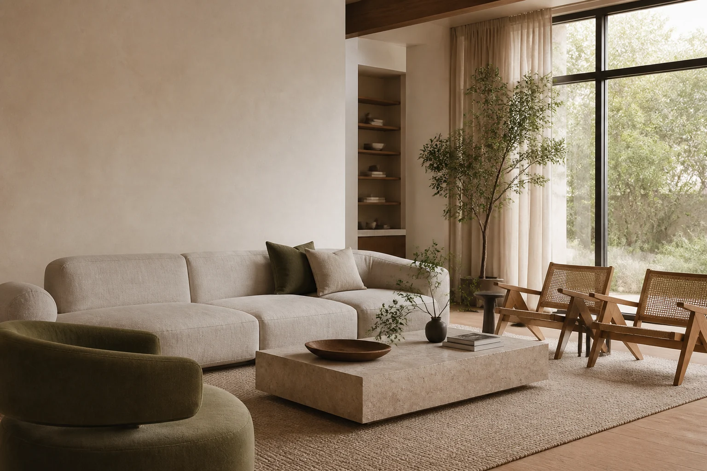
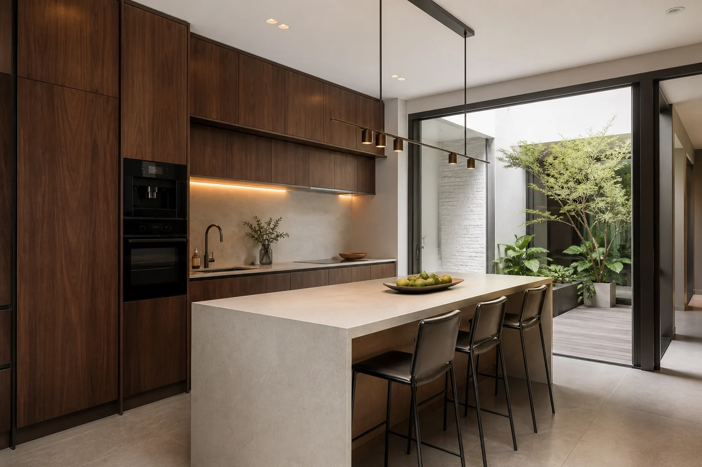
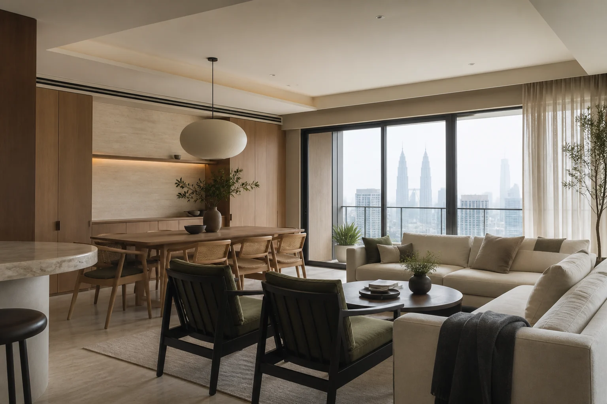

ExistingCompleted
Interior · Design · Build
Spaces designed
around the way
you live.
Thoughtful residential and commercial interiors designed from concept to completion.
Kuala Lumpur · Selangor

Forma Living · Malaysia
01 / Portfolio
Selected
spaces.
Homes, workplaces and rooms shaped around proportion, material and everyday life. Project details shown are portfolio placeholders and ready to be replaced.
02 / Renovation
From existing
to extraordinary.
Drag across each image to reveal how planning, light, storage and material choices can completely reframe an existing space.
ExistingCompleted
ExistingCompleted
03 / Featured case study
Project 01The Seri
The Seri
Residence.

Completed interior · Living room- Property type
- Terrace residence
- Location
- Kuala Lumpur
- Approx. size
- 2,400 sq ft
- Design direction
- Warm modern
- Scope
- Interior design · Renovation · Carpentry
- Year
- 20XX
The brief called for a calm family home with better daylight, clearer circulation and storage that would disappear into the architecture.
We opened the shared spaces, used a restrained palette of limestone, oak and soft textiles, and designed joinery around the family's daily routines. The result is quiet rather than minimal—layered with texture, proportion and places to gather.

Material study01 — 05
LimestoneNatural oakBronzeLinenForest
Ground floor planDrawing placeholder · Not to scale
LivingDiningKitchenEntryN ↑

04 / Services
One studio.
Every layer.
From the first measured drawing to the final built-in cabinet, we keep the design idea consistent across every decision.
Spatial concept, layout planning, material selection, lighting, detailed drawings and design coordination for a cohesive interior.
An integrated service combining design, renovation coordination, procurement and site delivery under one clear direction.
Targeted or full-property renovation guided by practical sequencing, detailed specifications and site quality reviews.
Layout studies that improve circulation, furniture placement, storage and how every square foot supports daily life.
Purpose-built kitchens, wardrobes and architectural joinery developed as part of the room rather than added afterward.
Brand-aware workplaces and customer environments designed for operational needs, longevity and a memorable spatial identity.
05 / Process
A clear route
from idea to home.
- 01
Consultation
Brief, priorities and budget context.
- 02
Site visit
Measure, assess and understand.
- 03
Concept
Planning and visual direction.
- 04
Design development
Materials, details and drawings.
- 05
Renovation
Site coordination and reviews.
- 06
Handover
Final checks and completion.
06 / Project inquiry
Let's talk about
your space.
Share what you know so far. Budget ranges shown here are editable placeholders and do not represent a stated minimum project value.